9.2.2. OpenView Graphing
Figure 9-3 shows
the sort of graph you can create with NNM. To create this graph, we
started the browser (
Figure 8-2) and clicked down
through the MIB tree until we found the
.
iso.org.dod.internet.mgmt.mib-2.interfaces.ifTable.ifEntry
list. Once there, we clicked on
ifInOctets;
then, while holding down the Ctrl key, we clicked on
ifOutOctets. After both were selected and we
verified that the "Name or IP Address" field displayed
the node we wanted to poll, we clicked on the "Graph"
button.
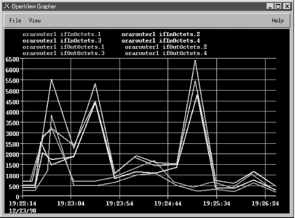
Figure 9-3. OpenView xnmgraph of octets in/out
Once the graph has started, you can change
the polling interval and the colors used to display different
objects. You can also turn off the display of some or all of the
object instances. The menu item "View

Line
Configuration" lets you specify which objects you would like to
display; it can also set multipliers for different items. For
example, to display everything in K, multiply the data by .001. There
is also an option ("View
Statistics") that shows a
statistical summary of your graph.
Figure 9-4 shows
some statistics from the graph in
Figure 9-3. While
the statistics menu is up, you can left-click on the graph; the
statistics window will display the values for the specific date and
time to which you are pointing with the mouse.
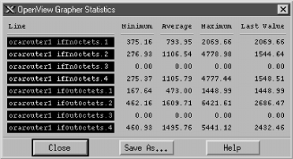
Figure 9-4. xnmgraph statistics
WARNING:
Starting xnmgraph
from the command line allows you to start
the grapher at a specific polling period and gives you several other
options. By default, OpenView polls at 10-second intervals. In most
cases this is fine, but if you are polling a multiport router to
check if some ports are congested, a 10-second polling interval may
be too quick and could cause operational problems. For example, if
the CPU is busy answering SNMP queries every 10 seconds, the router
might get bogged down and become very slow, especially if the router
is responsible for OSPF or other CPU-intensive tasks. You may also
see messages from OpenView complaining that another poll has come
along while it is still waiting for the previous poll to return.
Increasing the polling interval usually gets rid of these messages.
Some of
NNM's default menus let you use the grapher to poll devices
depending on their type. For example, you can select the object type
"router" on the NNM and generate a graph that includes
all your routers. Whether you start from the command line or from the
menu, there are times when you will get a message back that reads
"Requesting more lines than number of colors (25). Reducing
number of lines." This message means that there aren't
enough colors available to display the objects you are trying to
graph. The only good ways to avoid this problem are to break up your
graphs so that they poll fewer objects or to eliminate object
instances you don't want. For example, you probably don't
want to graph router interfaces that are down (for whatever reason)
and other "dead" objects. We will soon see how you can
use a regular expression as one of the arguments to the
xnmgraph command to graph only those interfaces
that are up and running.
Although the graphical interface is
very convenient, the command-line interface gives you much more
flexibility. The following script displays the graph in
Figure 9-3 (i.e., the graph we generated through the
browser):
#!/bin/sh
# filename: /opt/OV/local/scripts/graphOctets
# syntax: graphOctets <hostname>
/opt/OV/bin/xnmgraph -c public -mib \
".iso.org.dod.internet.mgmt.mib-2.interfaces.ifTable.ifEntry.ifInOctets::::::::,\
.iso.org.dod.internet.mgmt.mib-2.interfaces.ifTable.ifEntry.ifOutOctets::::::::" \
$1
You can run this script with the command:
$ /opt/OV/local/scripts/graphOctets orarouter1
The
worst part of writing the script is figuring out what command-line
options you want -- particularly the long strings of nine
colon-separated options. All these options give you the ability to
refine what you want to graph, how often you want to poll the
objects, and how you want to display the data. (We'll discuss
the syntax of these options as we go along, but for the complete
story, see the
xnmgraph(1) manpage.) In this
script, we're graphing the values of two MIB objects,
ifInOctets and
ifOutOctets.
Each OID we want to graph is the first (and in this case, the only)
option in the string of colon-separated options. On our network, this
command produces eight traces: input and output octets for each of
our four interfaces. You can add other OIDs to the graph by adding
sets of options, but at some point the graph will become too
confusing to be useful. It will take some experimenting to use the
xnmgraph command efficiently, but once you learn
how to generate useful graphs you'll wonder how you ever got
along without it.
WARNING:
Keeping your scripts neat is not only
good practice, but also aesthetically pleasing. Using a
"\" at the end of a line indicates that the next line is
a continuation of the current line. Breaking your lines intelligently
makes your scripts more readable. Be warned that the Unix shells do
not like extra whitespace after the
"\". The only character after each "\" should
be one carriage return.
Now, let's modify the script to
include more reasonable labels -- in particular, we'd like
the graph to show which interface is which, rather than just showing
the index number. In our modified script, we've used numerical
object IDs, mostly for formatting convenience, and we've added
a sixth option to the ugly sequence of colon-separated options:
.1.3.6.1.2.1.2.2.1.2 (this is the
ifDescr, or interface description, object in the
interface table). This option says to poll each instance and use the
return value of
snmpget
.1.3.6.1.2.1.2.2.1.2.INSTANCE as the label. This should
give us meaningful labels. Here's the new script:
#!/bin/sh
# filename: /opt/OV/local/scripts/graphOctets
# syntax: graphOctets <hostname>
/opt/OV/bin/xnmgraph -c public -title Bits_In_n_Out -mib \
".1.3.6.1.4.1.9.2.2.1.1.6:::::.1.3.6.1.2.1.2.2.1.2:::,\
.1.3.6.1.4.1.9.2.2.1.1.8:::::.1.3.6.1.2.1.2.2.1.2:::" $1
To see what we'll get for labels, here's the result of
walking
.1.3.6.1.2.1.2.2.1.2:
$ snmpwalk orarouter1 .1.3.6.1.2.1.2.2.1.2
interfaces.ifTable.ifEntry.ifDescr.1 : DISPLAY STRING- (ascii): Ethernet0
interfaces.ifTable.ifEntry.ifDescr.2 : DISPLAY STRING- (ascii): Serial0
interfaces.ifTable.ifEntry.ifDescr.3 : DISPLAY STRING- (ascii): Serial1
Figure 9-5 shows our new graph. With the addition
of this sixth option, the names and labels are much easier to read.
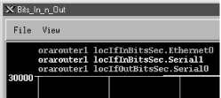
Figure 9-5. OpenView xnmgraph with new labels
Meaningful labels and titles are
important, especially if management is interested in seeing the
graphs. A label that contains an OID and not a textual description is
of no use. Some objects that are useful in building labels are
ifType
(.
1.3.6.1.2.1.2.2.1.3) and
ifOperStatus
(.
1.3.6.1.2.1.2.2.1.8). Be careful when using
ifOperStatus; if the status of the interface
changes during a poll, the label does not change. The label is
evaluated only once.
One of the most wasteful things you
can do is poll a useless object. This often happens when an interface
is administratively down or not configured. Imagine that you have 20
serial interfaces, but only one is actually in use. If you are
looking for octets in and out of your serial interfaces, you'll
be polling 40 times and 38 of the polls will always read
0. OpenView's
xnmgraph
allows you to specify an OID and regular expression to select what
should be graphed. To put this feature to use, let's walk the
MIB to see what information is available:
$ snmpwalk orarouter1 .1.3.6.1.2.1.2.2.1.8
interfaces.ifTable.ifEntry.ifOperStatus.1 : INTEGER: up
interfaces.ifTable.ifEntry.ifOperStatus.2 : INTEGER: up
interfaces.ifTable.ifEntry.ifOperStatus.3 : INTEGER: down
This tells us that only two interfaces are currently up. By looking
at
ifDescr, we see that the live interfaces are
Ethernet0 and
Serial0;
Serial1 is down. Notice that the type of
ifOperStatus is
INTEGER, but
the return value looks like a string. How is this? RFC 1213 defines
string values for each possible return value:
ifOperStatus OBJECT-TYPE
SYNTAX INTEGER {
up(1), -- ready to pass packets
down(2),
testing(3) -- in some test mode
}
ACCESS read-only
STATUS mandatory
DESCRIPTION
"The current operational state of the interface. The testing(3)
state indicates that no operational packets can be passed."
::= { ifEntry 8 }
It's fairly obvious how to read this: the integer value
1 is converted to the string
up. We can therefore use the value
1 in a regular expression that tests
ifOperStatus. For every instance we will check
the value of
ifOperStatus; we will poll that
instance and graph the result only if the status returns
1. In pseudocode, the operation would look
something like this:
if (ifOperStatus == 1) {
pollForMIBData;
graphOctets;
}
Here's the next version of our graphing script. To put this
logic into a graph, we use the OID for
ifOperStatus as the fourth colon option, and the
regular expression (
1) as the fifth option:
#!/bin/sh
# filename: /opt/OV/local/scripts/graphOctets
# syntax: graphOctets <hostname>
/opt/OV/bin/xnmgraph -c public \
-title Octets_In_and_Out_For_All_Up_Interfaces \
-mib ".1.3.6.1.2.1.2.2.1.10:::.1.3.6.1.2.1.2.2.1.8:1::::, \
.1.3.6.1.2.1.2.2.1.16:::.1.3.6.1.2.1.2.2.1.8:1::::" $1
This command graphs the
ifInOctets and
ifOutOctets
of any interface that has a current operational state equal to
1, or
up. It therefore polls
and graphs only the ports that are important, saving on network
bandwidth and simplifying the graph. Furthermore, we're less
likely to run out of colors while making the graph because we
won't assign them to useless objects. Note, however, that this
selection happens only during the first poll and stays effective
throughout the entire life of the graphing process. If the status of
any interface changes after the graph has been started, nothing in
the graph will change. The only way to discover any changes in
interface status is to restart
xnmgraph.
Finally, let's look at:
-
How to add a label to each of the OIDs we graph
-
How to multiply each value by a constant
-
How to specify the polling interval
The cropped graph in
Figure 9-6 shows how the
labels change when we run the following script:
#!/bin/sh
# filename: /opt/OV/local/scripts/graphOctets
# syntax: graphOctets <hostname>
/opt/OV/bin/xnmgraph -c public -title Internet_Traffic_In_K -poll 68 -mib \
".1.3.6.1.4.1.9.2.2.1.1.6:Incoming_Traffic::::.1.3.6.1.2.1.2.2.1.2::.001:,\
.1.3.6.1.4.1.9.2.2.1.1.8:Outgoing_Traffic::::.1.3.6.1.2.1.2.2.1.2::.001:" \
$1
The labels are given by the second
and sixth fields in the colon-separated options (the second field
provides a textual label to identify the objects we're graphing
and the sixth uses the
ifDescr field to identify
the particular interface); the constant multiplier (.001) is given by
the eighth field; and the polling interval (in seconds) is given by
the
-poll option.
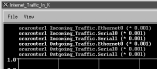
Figure 9-6. xnmgraph with labels and multipliers
By now it should be apparent how flexible OpenView's
xnmgraph program really is. These graphs can be
important tools for troubleshooting your network. When a network
manager receives complaints from customers regarding slow
connections, he can look at the graph of
ifInOctets generated by
xnmgraph to see if any router interfaces have
unusually high traffic spikes.
Graphs
like these are also useful when you're setting thresholds for
alarms and other kinds of traps. The last thing you want is a
threshold that is too triggery (one that goes off too many times) or
a threshold that won't go off until the entire building burns
to the ground. It's often useful to look at a few graphs to get
a feel for your network's behavior before you start setting any
thresholds. These graphs will give you a baseline from which to work.
For example, say you want to be notified when the battery on your UPS
is low (which means it is being used) and when it is back to normal
(fully charged). The obvious way to implement this is to generate an
alarm when the battery falls below some percentage of full charge,
and another alarm when it returns to full charge. So the question is:
what value can we set for the threshold? Should we use 10% to
indicate that the battery is being used and 100% to indicate that
it's back to normal? We can find the baseline by graphing the
device's MIBs.
[39] For
example, with a few days' worth of graphs, we can see that our
UPS's battery stays right around 94-97% when it is not in use.
There was a brief period when the battery dropped down to 89%, when
it was performing a self-test. Based on these numbers, we may want to
set the "in use" threshold at 85% and the "back to
normal" threshold at 94%. This pair of thresholds gives us
plenty of notification when the battery's in use, but
won't generate useless alarms when the device is in self-test
mode. The appropriate thresholds depend on the type of devices you
are polling, as well as the MIB data that is gathered. Doing some
initial testing and polling to get a baseline (normal numbers) will
help you set thresholds that are meaningful and useful.
Before
leaving
xnmgraph, we'll take a final look at
the nastiest aspect of this program: the sequence of nine
colon-separated options. In the examples, we've demonstrated
the most useful combinations of options. In more detail, here's
the syntax of the graph specification:
object:label:instances:match:expression:instance-label:truncator:multiplier:nodes
The parameters are:
- object
-
The OID of the
object whose values you want to graph. This can be in either numeric
or human-readable form, but it should not have
an instance number at the end. It can also be the name of an
expression (expressions are discussed in Appendix A, "Using Input and Output Octets").
- label
-
A string
to use in making the label for all instances of this object. This can
be a literal string or the OID of some object with a string value.
The label used on the graph is made by combining this label (for all
instances of the object) with instance-label,
which identifies individual instances of an object in a table. For
example, in Figure 9-6, the labels are
Incoming_Traffic and
Outgoing_Traffic;
instance-label is
1.3.6.1.2.1.2.2.1.2, or the
ifDescr field for each object being graphed.
- instances
-
A regular
expression that specifies which instances of
object to graph. If this is omitted, all
instances are graphed. For example, the regular expression
1 limits the graph to instance 1 of
object; the regular expression
[4-7] limits the graph to instances 4 through 7.
You can use the match and
expression fields to further specify which
objects to match.
- match
-
The OID of an object (not including the instance ID) to match against
a regular expression (the match-expression), to determine which
instances of the object to display in the graph.
- expression
-
A
regular expression; for each instance, the object given by
match is compared to this regular expression. If
the two match, the instance is graphed.
- instance-label
-
A
label to use to identify particular instances of the object you are
graphing. This is used in combination with the
label and truncator fields
to create a label for each instance of each object being graphed.
- truncator
-
A string that will be removed from
the initial portion of the instance label, to make it shorter.
- multiplier
-
A
number that's used to scale the values being graphed.
- nodes
-
The nodes to poll to create the graph.
You can list any number of nodes, separated by spaces. The wildcard
"*" polls all the nodes in OpenView's database. If
you omit this field, xnmgraph takes the list of
nodes from the final argument on the command line.
The only required field is
object; however, as
we've seen, you must have all eight colons even if you leave
some (or most) of the fields empty.
9.2.3. OpenView Data Collection and Thresholds
Once you close the OpenView graphs,
the data in them is lost forever. OpenView provides a way to fix this
problem with data collection. Data collection allows the user to poll
and record data continuously. It can also look at these results and
trigger events. One benefit of data collection is that it can watch
the network for you while you're not there; you can start
collecting data on Friday then leave for the weekend knowing that any
important events will be recorded in your absence.
You can start OpenView's Data Collection and Thresholds
function from the command line, using the command
$OV_BIN/xnmcollect, or from NNM under the Options
menu. This brings you to the "Data Collection and
Thresholds" window, shown in
Figure 9-7,
which displays a list of all the collections you have configured and
a summary of the collection parameters.
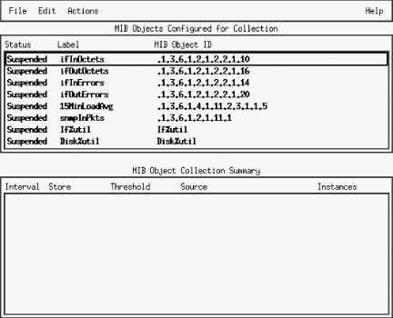
Figure 9-7. OpenView's Data Collection and Thresholds window
Configured collections that are in "Suspended" mode
appear in a dark or bold font. This indicates that OpenView is not
collecting any data for these objects. A "Collecting"
status indicates that OpenView is polling the selected nodes for the
given object and saving the data. To change the status of a
collection, select the object, click on "Actions," and
then click on either "Suspend Collection" or
"Resume Collection." (Note that you must save your
changes before they will take effect.)
9.2.3.1. Designing collections
To design a new collection, click
on "Edit
Add MIB Object." This takes you to a new
screen. At the top, click on "MIB Object"
[40] and click down through the tree until you
find the object you would like to poll. To look at the status of our
printer's paper tray, for example, we need to navigate down to
.iso.org.dod.internet.private.enterprises.hp.nm.system.net-peripheral.net-printer.generalDeviceStatus.gdStatusEntry.gdStatusPaperOut
(.
1.3.6.1.4.1.11.2.3.9.1.1.2.8).
[41] The object's description suggests that this is the
item we want: it reads "This indicates that the peripheral is
out of paper." (If you already know what you're looking
for, you can enter the name or OID directly.) Once there, you can
change the name of the collection to something that is easier to
read. Click "OK" to move forward. This brings you to the
menu shown in
Figure 9-8.
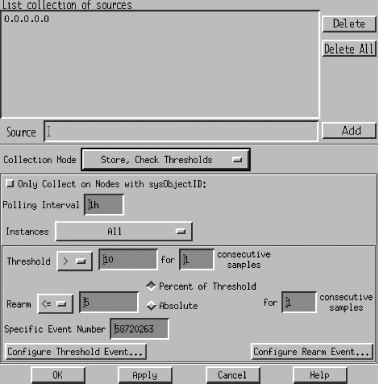
Figure 9-8. OpenView poll configuration menu
The "Source" field is
where you specify the nodes from which you would like to collect
data. Enter the hostnames or IP addresses you want to poll. You can
use wildcards like
198.27.6.* in your IP
addresses; you can also click "Add Map" to add any nodes
currently selected. We suggest that you start with one node for
testing purposes. Adding more nodes to a collection is easy once you
have everything set up correctly; you just return to the window in
Figure 9-8 and add the nodes to the Source list.
"Collection Mode" lets you
specify what to do with the data NNM collects. There are four
collection modes: "Exclude Collection," "Store,
Check Thresholds," "Store, No Thresholds," and
"Don't Store, Check Thresholds." Except for
"Exclude Collection," which allows us to turn off
individual collections for each device, the collection modes are
fairly self-explanatory. ("Exclude Collection" may sound
odd, but it is very useful if you want to exclude some devices from
collection without stopping the entire process; for example, you may
have a router with a hardware problem that is bombarding you with
meaningless data.) Data collection without a threshold is easier than
collection with a threshold, so we'll start there. Set the
Collection Mode to "Store, No Thresholds." This disable
(grays out) the bottom part of the menu, which is used for threshold
parameters. (Select "Store, Check Thresholds" if you want
both data collection and threshold monitoring.) Then click
"OK" and save the new collection. You can now watch your
collection grow in the
$OV_DB/snmpCollect
directory. Each collection consists of a binary datafile, plus a file
with the same name preceded by an exclamation mark (!); this file
stores the collection information. The data-collection files will
grow without bounds. To trim these files without disturbing the
collector, delete all files that do not contain an "!"
mark.
Clicking
on "Only Collect on Nodes with sysObjectID:" allows you
to enter a value for
sysObjectID.
sysObjectID
(
iso.org.dod.internet.mgmt.mib-2.system.sysObjectID)
lets you limit polling to devices made by a specific manufacturer.
Its value is the enterprise number the device's manufacturer
has registered with IANA. For example, Cisco's enterprise
number is 9, and HP's is 11 (the complete list is available at
http://www.isi.edu/in-notes/iana/assignments/enterprise-numbers);
therefore, to restrict polling to devices manufactured by HP, set the
sysObjectID to
11. RFC 1213
formally defines
sysObjectID
(
1.3.6.1.2.1.1.2) as follows:
sysObjectID OBJECT-TYPE
SYNTAX OBJECT IDENTIFIER
ACCESS read-only
STATUS mandatory
DESCRIPTION
"The vendor's authoritative identification of the network
management subsystem contained in the entity. This value
is allocated within the SMI enterprises subtree (1.3.6.1.4.1)
and provides an easy and unambiguous means for determining
what kind of box' is being managed. For example, if vendor
'Flintstones, Inc.' was assigned the subtree 1.3.6.1.4.1.4242,
it could assign the identifier 1.3.6.1.4.1.4242.1.1 to its
'Fred Router'."
::= { system 2 }
The polling interval is
the period at which polling occurs. You can use one-letter
abbreviations to specify units: "s" for seconds,
"m" for minutes, "h" for hours,
"d" for days. For example, 32s indicates 32 seconds; 1.5d
indicates one and a half days. When I'm designing a data
collection, I usually start with a very short polling
interval -- typically 7s (7 seconds between each poll). You
probably wouldn't want to use a polling interval this short in
practice (all the data you collect is going to have to be stored
somewhere), but when you're setting up a collection, it's
often convenient to use a short polling interval. You don't
want to wait a long time to find out whether you're collecting
the right data.
The next option is a drop-down menu that
specifies what instances should be polled. The options are
"All," "From List," and "From Regular
Expression." In this case we're polling a scalar item, so
we don't have to worry about instances; we can leave the
setting to "All" or select "From List" and
specify instance "0" (the instance number for all scalar
objects). If you're polling a tabular object, you can either
specify a comma-separated list of instances or choose the "From
Regular Expression" option and write a regular expression that
selects the instances you want. Save your changes ("File
Save"), and you're done.
9.2.3.2. Creating a threshold
Once you've set all this up,
you've configured NNM to periodically collect the status of
your printer's paper tray. Now for something more interesting:
let's use thresholds to generate some sort of notification when
the traffic coming in through one of our network interfaces exceeds a
certain level. To do this, we'll look at a Cisco-specific
object,
locIfInBitsSec (more formally
iso.org.dod.internet.private.enterprises.cisco.local.linterfaces.lifTable.lifEntry.locIfInBitsSec),
whose value is the five-minute average of the rate at which data
arrives at the interface, in bits per second. (There's a
corresponding object called
locIfOutBitsSec,
which measures the data leaving the interface.) The first part of the
process should be familiar: start Data Collection and Thresholds by
going to the Options menu of NNM; then click on "Edit
Add MIB Object." Navigate through the object tree until you get
to
locIfInBitsSec; click "OK" to get
back to the screen shown in
Figure 9-8. Specify the
IP addresses of the interfaces you want to monitor and set the
collection mode to "Store, Check Thresholds"; this allows
you to retrieve and view the data at a later time. (I typically turn
on the "Store" function so I can verify that the
collector is actually working and view any data that has
accumulated.) Pick a reasonable polling interval -- again, when
you're testing it's reasonable to use a short
interval -- then choose which instances you'd like to poll,
and you're ready to set thresholds.
The "Threshold" field lets you specify the point at which
the value you're monitoring becomes interesting. What
"interesting" means is up to you. In this case,
let's assume that we're monitoring a T1 connection, with
a capacity of 1.544 Mbits/second. Let's say somewhat
arbitrarily that we'll start worrying when the incoming traffic
exceeds 75% of our capacity. So, after multiplying, we set the
threshold to "> 1158000". Of course, network traffic
is fundamentally bursty, so we won't worry about a single
peak -- but if we have two or three consecutive readings that
exceed the threshold, we want to be notified. So let's set
"consecutive samples" to 3: that shields us from getting
unwanted notifications, while providing ample notification if
something goes wrong.
Setting an appropriate
consecutive samples value will make your life much more pleasant,
though picking the right value is something of an art. Another
example is monitoring the
/tmp partition of a
Unix system. In this case, you may want to set the threshold to
">= 85", the number of consecutive samples to 2, and
the poll interval to 5m. This will generate an event when the usage
on
/tmp exceeds 85% for two consecutive polls.
This choice of settings means that you won't get a false alarm
if a user copies a large file to
/tmp and then
deletes the file a few minutes later. If you set consecutive samples
to 1, NNM will generate a Threshold event as soon as it notices that
/tmp is filling up, even if the condition is
only temporary and nothing to be concerned about. It will then
generate a Rearm event after the user deletes the file. Since we are
really only worried about
/tmp filling up and
staying full, setting the consecutive threshold to 2 can help reduce
the number of false alarms. This is generally a good starting value
for consecutive samples, unless your polling interval is very high.
The rearm parameters let us specify when everything is back to normal
or is, at the very least, starting to return to normal. This state
must occur before another threshold is met. You can specify either an
absolute value or a percentage. When monitoring the packets arriving
at an interface, you might want to set the rearm threshold to
something like 926,400 bits per second (an absolute value that
happens to be 60% of the total capacity) or 80% of the threshold
(also 60% of capacity). Likewise, if you're generating an alarm
when
/tmp exceeds 85% of capacity, you might
want to rearm when the free space returns to 80% of your 85%
threshold (68% of capacity). You can also specify the number of
consecutive samples that need to fall below the rearm point before
NNM will consider the rearm condition met.
The
final option, "Configure Threshold Event," asks what
OpenView events you would like to execute for each state. You can
leave the default event, or you can refer to
Chapter 10, "Traps" for more on how to configure events.
The "Threshold" state needs a specific event number that
must reside in the HP enterprise. The default Threshold event is
OV_DataCollectThresh - 58720263. Note that the
Threshold event is always an odd number. The Rearm event is the next
number after the Threshold event: in this case, 58720264. To
configure events other than the default, click on "Configure
Threshold Event" and, when the new menu comes up, add one event
(with an odd number) to the HP section and a second event for the
corresponding Rearm. After making the additions, save and return to
the Collection windows to enter the new number.
When you finish configuring the
data collection, click "OK." This brings you back to the
Data Collection and Thresholds menu. Click "File
Save" to make your current additions active. On the bottom half
of the "MIB Object Collection Summary" window, click on
your new object and then on "Actions
Test SNMP."
This brings up a window showing the results of an SNMP test on that
collection. After the test, wait long enough for your polling
interval to have expired once or twice. Then click on the object
collection again, but this time click on "Actions
Show
Data." This window shows the data that has been gathered so
far. Try blasting data through the interface to see if you can
trigger a Threshold event. If the Threshold events are not occurring,
verify that your threshold and polling intervals are set correctly.
After you've seen a Threshold event occur, watch how the Rearm
event gets executed. When you're finished testing, go back and
set up realistic polling periods, add any additional nodes you would
like to poll, and turn off storing if you don't want to collect
data for trend analysis. Refer to the
$OV_LOG/snmpCol.trace file if you are having any
problems getting your data collection rolling. Your HP OpenView
manual should describe how to use this trace file to troubleshoot
most problems.
Once you have collected some data,
you can use
xnmgraph to display it. The
xnmgraph command to use is similar to the ones we
saw earlier; it's an awkward command that you'll want to
save in a script. In the following script, the
-browse
option points the grapher at the stored data:
#!/bin/sh
# filename: /opt/OV/local/scripts/graphSavedData
# syntax: graphSavedData <hostname>
/opt/OV/bin/xnmgraph -c public -title Bits_In_n_Out_For_All_Up_Interfaces \
-browse -mib \
".1.3.6.1.4.1.9.2.2.1.1.6:::.1.3.6.1.2.1.2.2.1.8:1:.1.3.6.1.2.1.2.2.1.2:::,\
.1.3.6.1.4.1.9.2.2.1.1.8:::.1.3.6.1.2.1.2.2.1.8:1:.1.3.6.1.2.1.2.2.1.2:::" \
$1
Once the graph has started, no real
(live) data will be graphed; the display is limited to the data that
has been collected. You can click on "File
Update
Data" to check for and insert any data that has been gathered
since the start of the graph. Another option is to leave off
-browse, which allows the graph to continue
collecting and displaying the live data along with the collected
data.
Finally, to graph all
the data that has been collected for a specific node, go to NNM and
select the node you would like to investigate. Then select
"Performance
Graph SNMP Data
Select Nodes"
from the menus. You will get a graph of all the data that has been
collected for the node you selected. Alternately, select the
"All" option in "Performance
Graph SNMP
Data." With the number of colors limited to 25, you will
usually find that you can't fit everything into one
graph.
9.2.4. Castle Rock's SNMPc
The
workgroup edition of Castle Rock's SNMPc program has similar
capabilities to the OpenView package. It uses the term "trend
reporting" for its data collection and threshold facilities.
The enterprise edition of SNMPc even allows you to export data to a
web page. In all our examples we use the workgroup edition of SNMPc.
To
see how SNMPc works, let's graph the
snmpOutPkts object. This object's OID is
1.3.6.1.2.1.11.2
(
iso.org.dod.internet.mgmt.mib-2.snmp.snmpOutPkts).
It is defined in RFC 1213 as follows:
snmpOutPkts OBJECT-TYPE
SYNTAX Counter
ACCESS read-only
STATUS mandatory
DESCRIPTION
"The total number of SNMP messages which were passed from
the SNMP protocol entity to the transport service."
::= { snmp 2 }
We'll use the
orahub device for this
example. Start by clicking on the MIB Database selection tab shown in
Figure 9-9; this is the tab at the bottom of the
screen that looks something like a spreadsheet -- it's the
second from the left. Click down the tree until you come to
iso.org.dod.internet.mgmt.mib-2.snmp. Click on
the object you would like to graph (for this example,
snmpOutPkts). You can select multiple objects
with the Ctrl key.
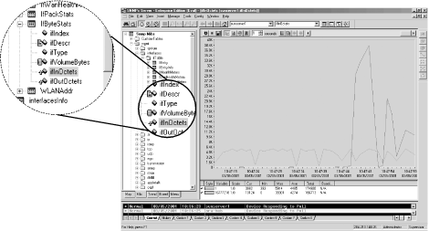
Figure 9-9. SNMPc MIB Database view
TIP:
SNMPc has a nonstandard way of organizing MIB information. To get to
the snmpOutPkts object, you need to click down
through the following: "Snmp MIBs mgmt snmp
snmpInfo." Though this is quicker than the RFC-based
organization used by most products, it does get a little confusing,
particularly if you work with several products.
Once you have selected the appropriate MIB object, return to the top
level of your map by either selecting the house icon or clicking on
the Root Subnet tab (at the far left) to select the device you would
like to poll. Instead of finding and clicking on the device, you can
enter in the device's name by hand. If you have previously
polled the device, you can select it from the drop-down box.
Figure 9-10 shows what a completed menu bar should look
like.
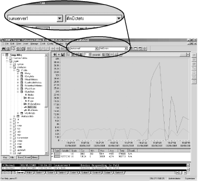
Figure 9-10. SNMPc menu bar graph section
To begin
graphing, click the button with the small jagged graph (the third
from the right). Another window will appear displaying the graph
(
Figure 9-11). The controls at the top change the
type of graph (line, bar, pie, distribution, etc.) and the polling
interval and allow you to view historical data (the horizontal slider
bar). Review the documentation on how each of these work or, better
yet, play around to learn these menus even
faster.
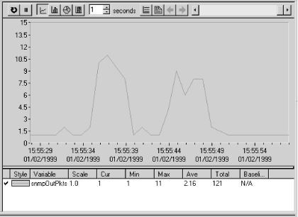
Figure 9-11. SNMPc snmpOutPkts graph section
Once you have a collection of frequently
used graphs, you can insert them into the custom menus. Let's
insert a menu item in the Tools menu that displays all the
information in the
snmpInfo table as a pie
chart. Click on the Custom Menus tab (the last one), right-click on
the Tools folder, and then left-click on "Insert Menu".
This gets you to the "Add Custom Menu" window (
Figure 9-12). Enter a menu name and select
"Pie" for the display type. Use the browse button
(>>) to click down the tree of MIB objects until you reach the
snmpInfo table; then click "OK."
Back at "Add Custom Menu," use the checkboxes in the
"Use Selected Object" section to specify the types of
nodes that will be able to respond to this custom menu item. For
example, to chart
snmpInfo a device obviously
needs to support SNMP, so we've checked the "Has
SNMP" box. This information is used when you (or some other
user) try to generate this chart for a given device. If the device
doesn't support the necessary protocols, the menu entry for the
pie chart will be disabled.
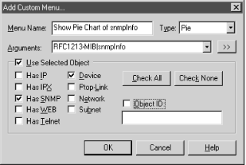
Figure 9-12. SNMPc Add Custom Menu window
Click
"OK" and proceed to your map to find a device to test.
Any SNMP-compatible device should suffice. Once you have selected a
device, click on "Tools" and then "Show Pie Chart
of snmpInfo." You should see a pie chart displaying the data
collected from the MIB objects you have configured. (If the device
doesn't support SNMP, this option will be disabled.)
Alternately, you could have double-clicked your new menu item in the
Custom Menu tab.
SNMPc has a threshold system called
Automatic Alarms that can track the value of an object over time to
determine its highs and lows (peaks and troughs) and get a baseline.
After it obtains the baseline, it alerts you if something strays out
of bounds. In the main menu, clicking on "Config
Trend
Reports" brings up the menu shown in
Figure 9-13.
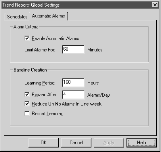
Figure 9-13. SNMPc Trend Reports Global Settings menu
Check the "Enable Automatic
Alarms" box to enable this feature. The "Limit Alarms
For" box lets you specify how much time must pass before you
can receive another alarm of the same nature. This prevents you from
being flooded by the same message over and over again. The next
section, "Baseline Creation," lets you configure how the
baseline will be learned. The learning period is how long SNMPc
should take to figure out what the baseline really is. The
"Expand After" option, if checked, states how many alarms
you can get in one day before SNMPc increases the baseline
parameters. In
Figure 9-13, if we were to get four
alarms in one day, SNMPc would increase the threshold to prevent
these messages from being generated so frequently. Checking the
"Reduce On No Alarms In One Week" box tells SNMPc to
reduce the baseline if we don't receive any alarms in one week.
This option prevents the baseline from being set so high that we
never receive any alarms. If you check the last option and click
"OK," SNMPc will restart the learning process. This gives
you a way to wipe the slate clean and start over.